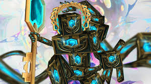

Chests are getting Deleted!
Riot Games recently removed Hextech Chests from the loot pool in League of Legends, sparking significant backlash from the player base. Previously, players could earn these chests by achieving S-ranks with champions or purchasing them with RP, allowing for a steady influx of free skins, champions, and other cosmetics. With their removal, Riot has effectively reduced the amount of free loot players can earn, making progression feel more grind-heavy and pushing players further toward microtransactions. This change has left many long-time players frustrated, feeling that the game is becoming increasingly monetized at the cost of player rewards.
The backlash has been swift, with many players voicing their anger across Reddit, Twitter, and the official League of Legends forums. Some argue that the decision alienates free-to-play users who rely on Hextech Chests to earn skins without spending money, while others see it as another step in Riot’s growing trend of aggressive monetization. The removal comes alongside other controversial changes to the game’s economy, leading to accusations that Riot is prioritizing profits over player satisfaction. As frustration mounts, many are calling for Riot to reconsider, but so far, the company has yet to offer a response that satisfies the outraged community.
This revolt has had a particularly funny side effect of having players vent by meeming instead of harassing, sparking the rise of concept champions and even the so called "glorious chestification".